FINAL EXAMINATION#
Instruction#
CITY UNIVERSITY OF HONG KONG
| Course code & title | : CS5483 Data Warehousing and Data Mining |
| Session | : Semester B 2022/23 |
| Time allowed | : Two hours |
- This is a computerized examination that requires internet access.
- There are NO printings of question papers or answer books.
- Answer ALL questions via the Safe Exam Browser on your designated Lab PC.
- For numerical answers that are not integer, they must be accurate at least up to 3 significant figures. Equivalent algebraic forms without simplification are acceptable.
This is a closed-book examination.
- blank scratch papers;
- university approved calculators; and
- online python tutor: https://dive4dec.github.io/optlite/live.html
Different classification algorithms#
Choose the classification algorithm associated with the description.
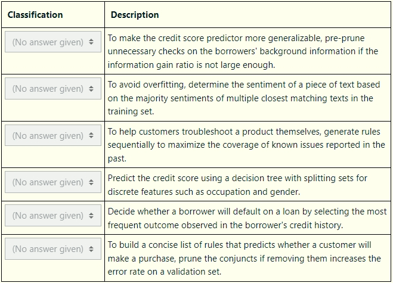
Ensemble methods#
Indicates whether the following statements about ensemble methods are correct:
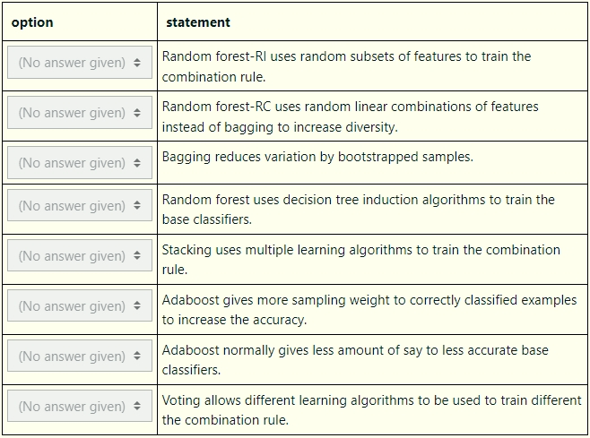
DBSCAN algorithm#
Give the DBSCAN algorithm by reordering the following steps.
:::{note} To properly test your understanding, bodies of any loops/conditionals are not indented. You are also not required to mark the beginnings/endings of loops/conditionals. :::
Input: Dataset $D:={\boldsymbol{p}i}{i=1}^n$ and parameters $(\epsilon, \operatorname{MinPts})$ for density-connectedness.
Output: A partition of $D$ into clusters $C_1,\dots,C_k$ and a set $N$ of noise points.
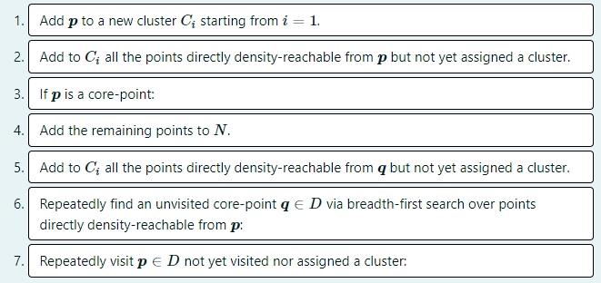
Optics#
Drag the appropriate terms to the blanks. :::{note} Each term may be dragged to multiple blanks, and some terms may not be needed. :::
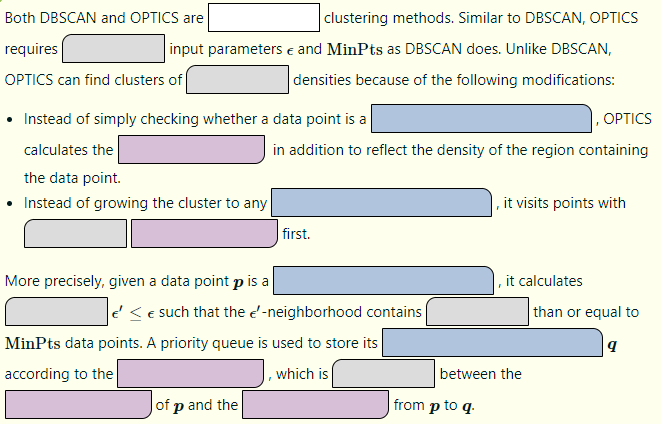
:::{list-table} Choices: :widths: auto
density-based
centroid-based
agglomerative
the same
different
smaller
the minimum
larger
the maximum
core point
directly density-reachable point
border point
core distance
reachability distance
actual distance :::
BUC#
Give the BUC algorithm by reordering the following steps. :::{note} To properly test your understanding, bodies of any loops/conditionals are not indented. You are also not required to mark the beginnings/endings of loops/conditionals. :::
Input:
input data
inputcorresponding to a cell,starting dimension
dimfor the search, andthe minimum support
min_supfor the iceberg condition.
Output: All cells in the iceberg cube along dimensions starting from dim.
Procedure: BUC(input,dim,min_sup)
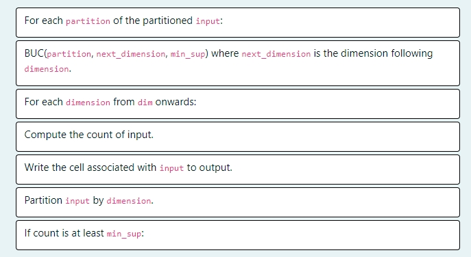
Failure#
Select the issue associated with the description. Choose “none” if none of the other options apply.
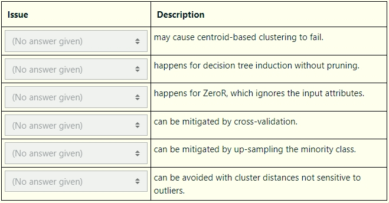
Aggregate functions and frequent itemsets#
Categorize the different facts below and choose “none” if none of the other descriptions apply.
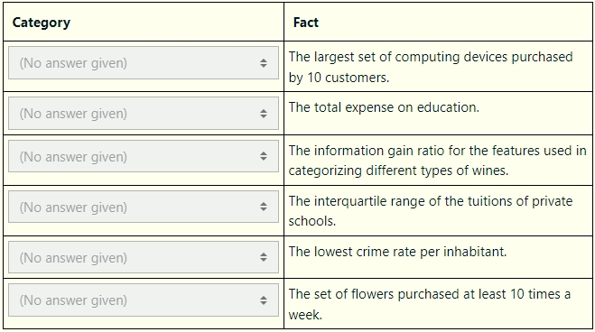
FOIL and Info Gain#
Consider the data $D$ containing information about customers of a subscription-based online platform
$i$: A unique index for each customer.
$RP$: Recent_promotion_used: A binary attribute with values ${0,1}$, representing whether the customer has used a recent promotion offered by the platform $(1)$ or not $(0)$.
$FH$: Frequent_help_requests: A binary attribute with values ${0,1}$, representing whether the customer frequently requests help or customer support $(1)$ or not $(0)$.
$C$: The class attribute in ${0,1}$ indicating whether the customer is likely to churn.
Using the hold-out method, the training set is chosen in the following way: 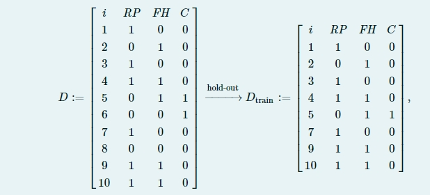
and use $D_{test}$ for testing. :::{note}
You may enter log base $2$ as
log2. E.g.,log2(x)will evaluate tolog(x)/log(2), wherelogis the natural logarithm.You may use the function $h$ to compute the entropy (in bits) by providing the probability masses as arguments, e.g.,
h(1/4,1/2,1/2)evaluates to 1.5 bits. ::: Give the corresponding set of index $i$ for the remaining data $D_{test}$ for testing. :::{note} Enter an unordered set as comma separated values enclosed with braces. E.g., the set of indices1,2,3is entered as{1,2,3}. :::
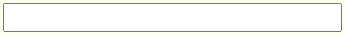
Calculate the information quantities listed below.
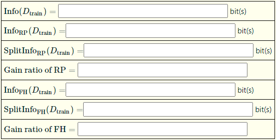
Based on the Gain Ratio of RP and FH, which one of the two features should be chosen?
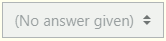
Considering the training set $D_{train}$, calculate the FOIL Gains respectively for adding each of the following conjuncts to the rule $C = 1$.
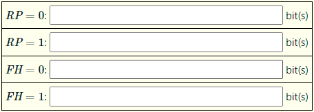
Based on the FOIL Gains of RP and FH, which one of the two features should be chosen?
Single linkage and k-means#
Consider clustering flowers based on their petal length and sepal length:
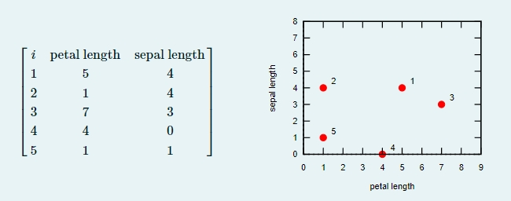
Complete the following table by applying the single-linkage method using the Euclidean distance without normalization. :::{note}
Initially, cluster index $i$ for $i \in {1,…,5}$ is assigned to the singleton cluster containing the $i$-th instance. Larger cluster indices are assigned to newer cluster merged by the algorithm.
Enter the set of two clusters to merge as a comma separated pair of cluster indices (NOT instance indices) enclosed using braces. E.g., enter ${1,6}$ (or ${6,1}$) to mean merging the singleton cluster indexed by $1$ and the new cluster indexed by $6$. :::
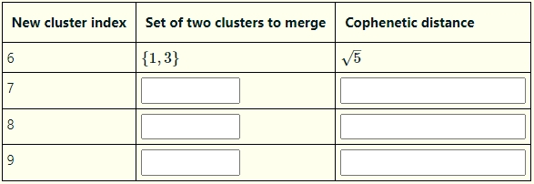
Complete the following table by applying $k$-means clustering with $k = 2$ using the Euclidean distance without normalization. :::{note}
To give a cluster, enter a comma separated list of instance indices (NOT cluster indices) enclosed by braces. E.g., ${1,2}$ means a cluster of instances $1$ and $2$. The clusters for each step should be computed for the cluster centers of the previous step. The randomly chosen initial cluster centers are given in Step 0.
To give a cluster center, enter the values of petal length followed by sepal length separately. The cluster centers for each step should be computed from the clusters of the current step. :::
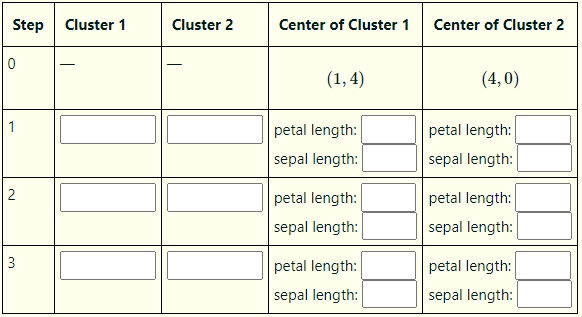
Apriori algorithm and association rules#
Consider the following transactional data where each transaction is an itemset consisting of different brands of camera lenses purchased:
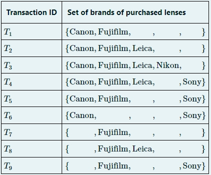
The ordered list of all brands is [Canon, Fujifilm, Leica, Nikon, Sony].
Complete the following table using the Apriori algorithm to identify all the frequent itemsets with a support count of at least 2. Give one candidate itemset in each row in the order generated by the Apriori algorithm according to the ascending lexicographical order of the item labels. Note that pruned itemsets should NOT enter the candidate list as they need not be counted.
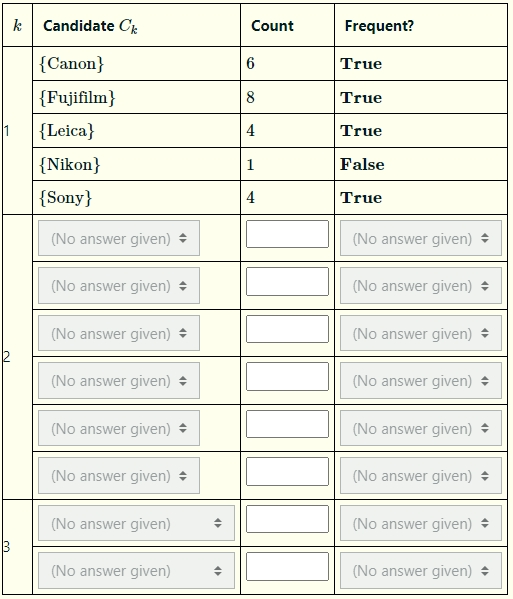
Give the pruned itemsets in each row in the order pruned by the Apriori algorithm according to the ascending lexicographical order of the item labels.
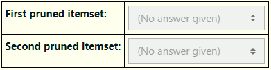
Complete the following using the support-confidence framework to identify association rules with support at least 0.4 and confidence at least 0.5. List the rules in descending lexicographical order of (support, confidence, lift), e.g., (0.5,0.6,1) should be before (0.4,0.6,2), which should be before (0.4,0.6,1).
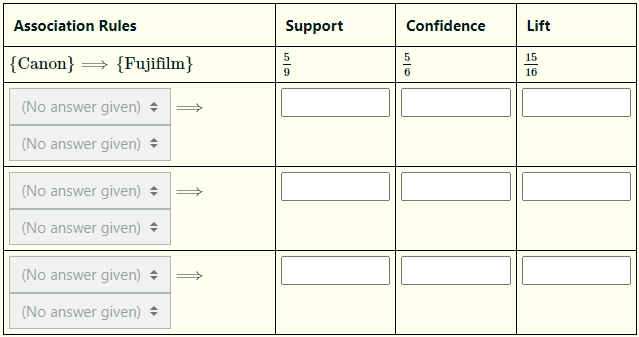